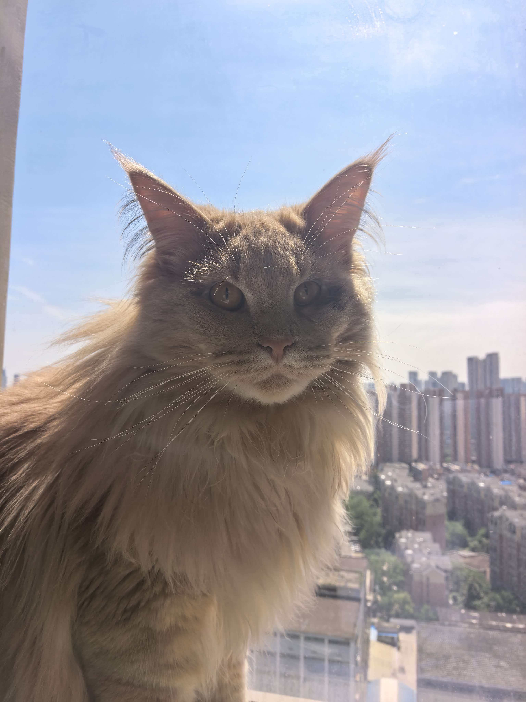
真实原图 1docs/猫.jpg
把当前项目里的真实猫照片、宿主 imag2 生成补充样本、以及现有 2D 多动作资产放在同一个页面内对照查看。
这些是项目 docs/ 内用于真实照片流程验证的三张猫图。

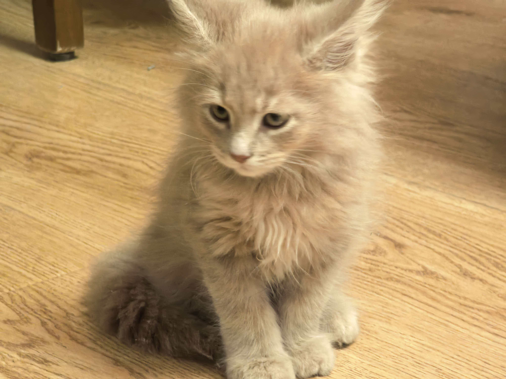
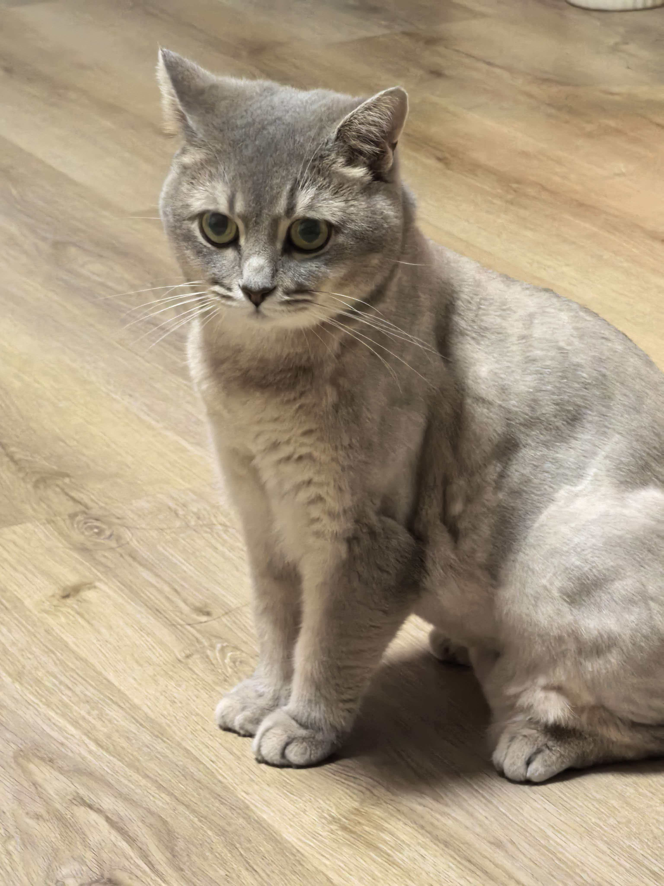
这些样本用于扩充 V29 mixed benchmark。它们是生成样本，不等同于真实任意用户照片验收通过。
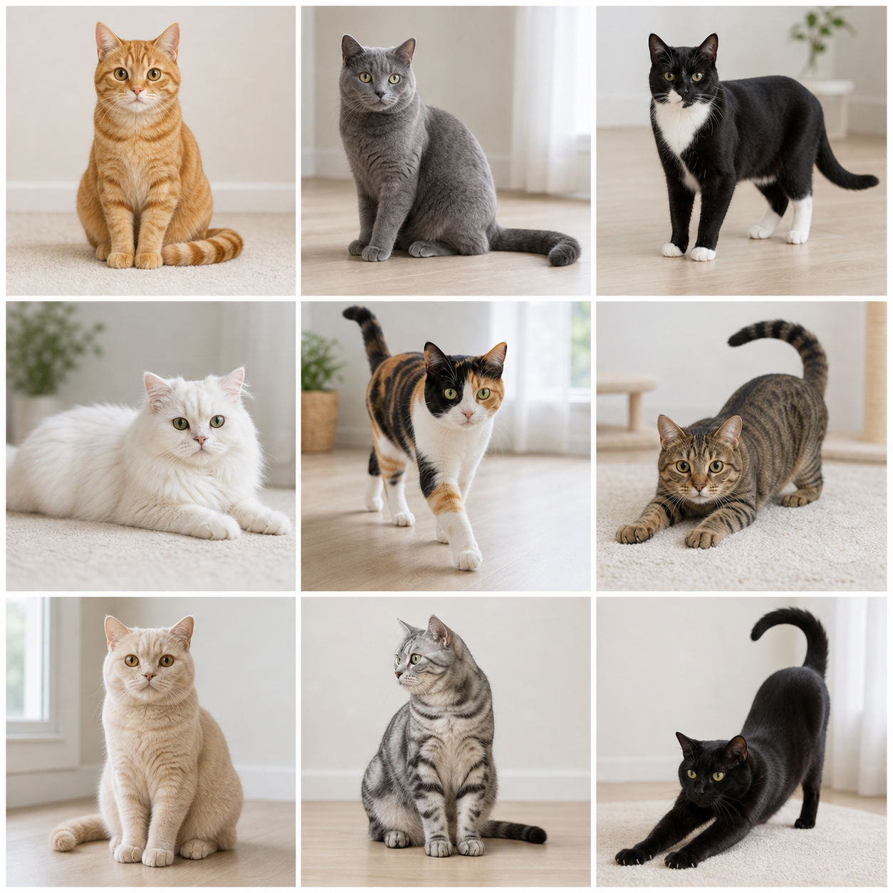
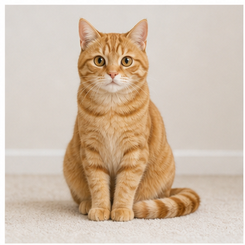
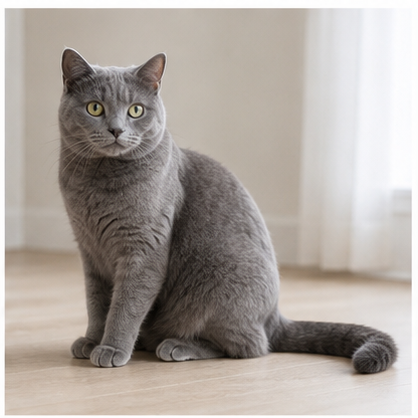
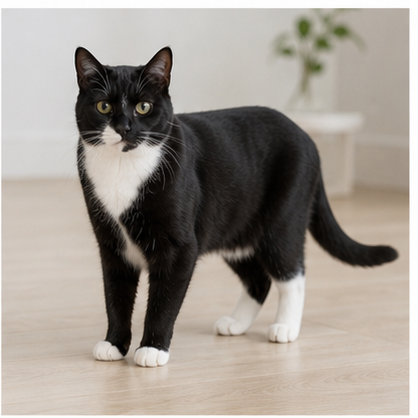
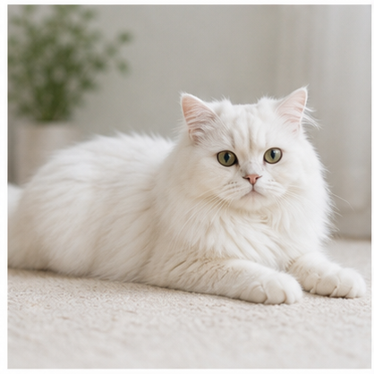
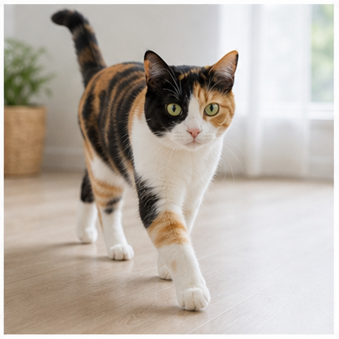
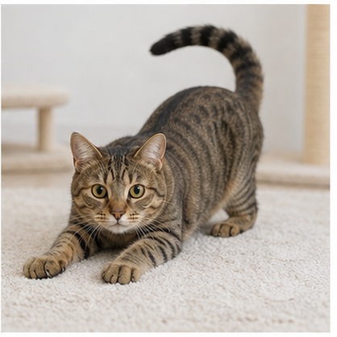
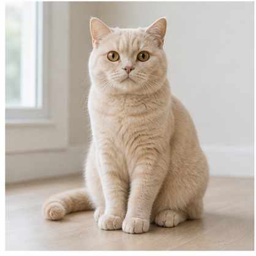
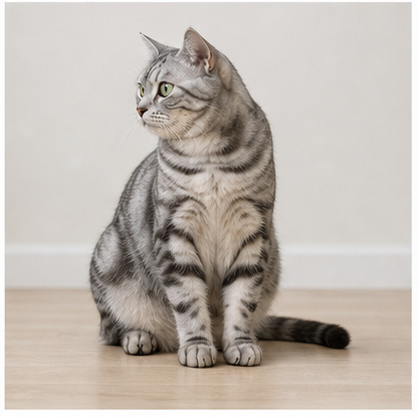
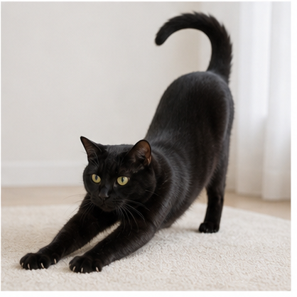
下面播放的是当前仓库内 v16-host-image-tool-orange-tabby 的重生成帧序列。每个动作现在都是 6 帧首尾闭合循环，不再只依赖整图放大缩小。